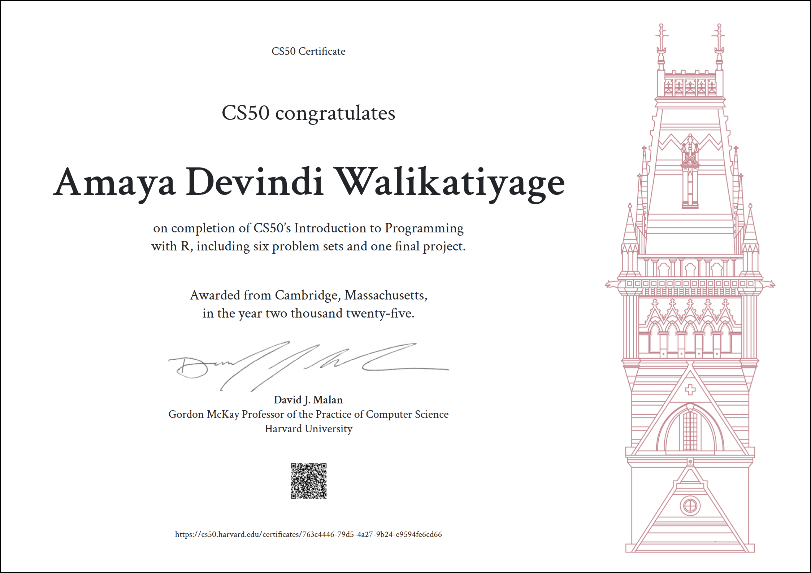

Pursuing Knowledge to Create Meaningful Impact
Passionate about Computer Science, AI, and Data Science — using technology and innovation to create positive change in society.
Certificates Gained

CS50P: Introduction to Programming with Python
Provider: Harvard University
View & Verify Certificate
CS50AI: Introduction to Artificial Intelligence with Python
Provider: Harvard University
View & Verify Certificate

Core Toolkit & Technologies
Learning Notes & Resources
An overview of my current and completed learning tracks — click through to the resources I used.
Python Programming
A versatile, high-level programming language used for web development, automation, data analysis, AI, and more. Python is beginner-friendly and widely adopted in both academia and industry.
Deep Learning (CNNs, RNNs)
Advanced subset of machine learning focusing on neural networks. Learn to build and train CNNs, RNNs, and transformers for image recognition, NLP, and AI applications using TensorFlow and Keras.
Databases (SQL, MySQL, sqlite)
Learn to store, retrieve, and manage structured data efficiently. Covers relational databases, SQL queries, database design, normalization, and basic CRUD operations for building data-driven applications.
Data Science & Analysis
Techniques for exploring, cleaning, analyzing, and visualizing data to extract meaningful insights. Tools include Pandas, NumPy, Matplotlib, Seaborn, and data wrangling best practices.
Machine Learning
Introduction to algorithms that allow computers to learn from data and make predictions. Covers supervised, unsupervised, and reinforcement learning using libraries like scikit-learn and TensorFlow.
Web Development (HTML, CSS, PHP)
Build modern, responsive websites and web applications. Learn HTML for structure, CSS for styling, and PHP for server-side programming. Covers full-stack fundamentals and database integration.
R Programming
A language built for data analysis, visualization, and statistical computing. Ideal for exploring datasets, performing statistical tests, and creating professional data visuals.
Statistics
The foundation of all data-driven decision making. Learn concepts like probability, distributions, hypothesis testing, and regression to understand and interpret data effectively.